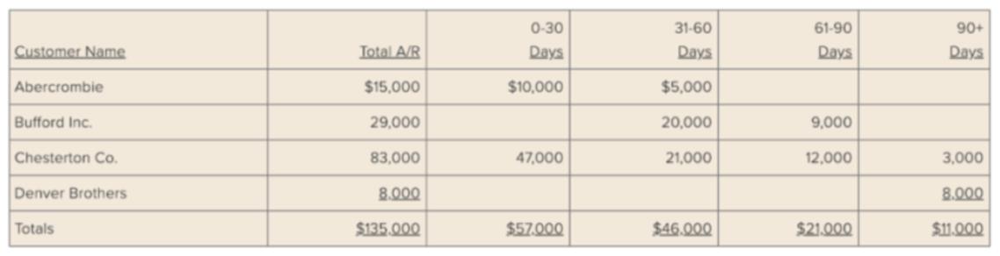

Dòng tiền xấu có thể giết chết một doanh nghiệp kể cả khi việc kinh doanh vẫn tạo ra lợi nhuận. Để tránh khỏi điều này, doanh nghiệp SME cần xác định được những “chỗ rò rỉ” tiền mặt đang làm hao hụt dần nguồn tiền dự trữ.
Một trong những “chỗ rò rỉ” này là những khoản thanh toán trễ. Doanh nghiệp SME và các doanh nghiệp mới thành lập thường dễ bị ảnh hưởng xấu bởi nó vì họ thường không có một lượng tiền lớn dữ trữ sẵn để xoay sở và gặp khó khăn trong việc tiếp cận các nguồn vốn truyền thống.
Ở khu vực Châu Á Thái Bình Dương, tần suất trung bình của những khoản thanh toán B2B trễ là 87,9% trong năm 2018. Mặc dù đã giảm 1,3% so với năm 2017, đây vẫn là một tỉ lệ cao dựa theo báo cáo D&B (Dun and Bradstreet) chưa kể đến những chi phí về nhân lực và kinh tế gây ra bởi những khoản thanh toán trễ.
Dựa theo Hiệp hội kế toán công chứng Anh Quốc (ACCA), các doanh nghiệp nhỏ và siêu nhỏ thường ít có khả năng để tăng chi phí đầu tư hay nhân sự khi phải đối mặt với những khoản thanh toán trễ. Một cuộc khảo sát đa quốc gia về các doanh nghiệp SME cho thấy rằng những khoản thanh toán trễ gây ra một loạt các tác động ngoài ý muốn, từ việc cắt giảm lương và những khoản đầu tư trong tương lai đến tránh né các khoản thưởng Giáng sinh.
Dù lẽ hiển nhiên là khách hàng phải có trách nhiệm thanh toán cho những sản phẩm và dịch vụ họ nhận được, các doanh nghiệp vẫn có thể áp dụng một số chiến lược để đẩy nhanh việc thanh toán của khách hàng.
1. Có một cơ sở dữ liệu khách hàng chính xác và mới nhất
Cơ sở dữ liệu tổng về khách hàng nên bao gồm các thông tin như: điều khoản thanh toán, hạn mức tín dụng bằng đô la, chiết khấu và các thông tin khác tương tự. Điều này sẽ cho phép bạn nhanh chóng kiểm tra xem khách hàng mua sản phẩm hay dịch vụ nào và số tiền họ có thể mua trả sau.
Cở sở dữ liệu này cũng cho thấy những thỏa thuận thanh toán, ví dụ như: thanh toán 50% khi kí hợp đồng và 50% khi nhận hàng. Bạn sẽ kiểm tra được lịch sử thanh toán của khách hàng, giúp bạn biết rõ khách nào thanh toán đúng hạn, khách nào thanh toán trễ và trễ mất bao nhiêu ngày.
Ngoài ra, việc dữ liệu có cập nhật địa chỉ chính xác và mới nhất của khách hàng, thông tin cần thiết cho hóa đơn và các thông tin liên hệ của người nhận hóa đơn và xử lý khoản thanh toán là khá quan trọng. Bằng cách này, bạn sẽ tránh được sự chậm chễ trong việc thanh toán do sai sót trong hóa đơn, chứng từ.
Mặc dù việc kiểm tra xem địa chỉ công ty có chính xác không hay tên khách hàng đã được viết đúng chưa có vẻ rất nhỏ nhặt nhưng nó sẽ có ích về mặt lâu dài. Suy cho cùng, ACCA lưu ý rằng việc chậm thanh toán do thủ tục hành chính, bao gồm cả chậm trễ do sai sót là một trong những lí do phổ biến nhất khiến những khoản thanh toán bị trễ nãi.
2. Tạo hoá đơn tự động
Trong một nghiên cứu về việc chậm thanh toán ở khu vực Châu Á Thái Bình Dương, 68,2% đối tượng phỏng vấn cho rằng hóa đơn điện tử giúp việc thanh toán trở nên nhanh chóng hơn. Nhờ hoá đơn tự động, bạn có thể hạn chế sai sót và thời gian chậm trễ trong thủ tục hành chính vì không cần phải nhập dữ liệu thủ công.
Bạn còn có thể tự động hóa thư nhắc thanh toán – đây là một điều mang lại lợi ích không nhỏ bởi vì 5%- 10% tất cả các công việc hành chính, tương đương với 20 ngày 1 năm được sử dụng để theo dõi các khoản thanh toán. Với vô số các giải pháp phần mềm có giá cả phải chăng trên thị trường, việc bắt đầu tự động hóa quy trình tạo hóa đơn trở nên vô cùng dễ dàng.
Đầu tiên, kiểm tra xem phần mềm kế toán doanh nghiệp bạn đang sử dụng có chức năng tạo hóa đơn điện tử hay không. Điều này sẽ tiết kiệm thời gian và chi phí dùng để áp dụng công cụ mới. Nếu không có chức năng này thì hãy kiểm tra xem liệu chức năng này có đang được phát triển hay không. Bạn cũng có thể tìm hiểu xem phần mềm có khả năng tích hợp các ứng dụng khác mà có chức năng tạo hóa đơn điện tử hay không.
Lưu ý rằng bạn nên chọn phương án tạo hóa đơn điện tử sử dụng điện toán đám mây để có thể cập nhật và truy cập những hóa đơn của bạn trên mọi thiết bị. Nhiều phần mềm sử dụng điện toán đám mây cũng cho phép tích hợp với các ứng dụng từ bên thứ ba.
3. Cập nhật theo thời gian thực
Sử dụng các công cụ điện toán đám mây, bạn có thể nhận được cập nhật theo thời gian thực về sổ sách của công ty, bạn sẽ luôn có cái nhìn tổng quan về tình hình tài chính của doanh nghiệp.
Những công cụ này giúp tự động hóa quy trình tạo hóa đơn và quy trình kế toán thông qua việc tự động hiển thị những khoản thanh toán từ khách hàng trên sổ sách. Có nghĩa là bạn sẽ thấy được khi nào nhận được khoản thanh toán từ khách hàng và bạn cũng có thể biết được khi nào khách chưa thanh toán để từ đó biết được rằng cần phải nhắc thanh toán.
4. Ghi chép lại quy trình
Có một tài liệu hướng dẫn nội bộ về quy trình lập hóa đơn và quy trình thu về các khoản nợ. Thoạt đầu, những bước này có vẻ đơn giản nhưng bạn sẽ dần dần phải đối mặt với nhiều quyết định khác nhau trong quá trình này:
Bao gồm:
- Nên đợi bao nhiêu ngày sau khi gửi hóa đơn, trước khi nhắc thanh toán?
- Nên nhắc thanh toán bằng hình thức nào? Thư điện tử, tin nhắn, gọi điện v.v…
- Phải làm gì khi khách hàng đã trễ thanh toán hơn 30 hay 60 ngày?
- Ai nên là người thực hiện nhắc thanh toán? Và tên ai sẽ được đính kèm vào trong thư điện tử?
Như bạn có thể thấy, đây là những bước mà bạn sẽ có thể phải thực hiện hàng tháng – vì vậy bạn không nên đưa ra quyết định bừa bãi. Trao đổi với đội ngũ bán hàng và kế toán để lập nên một quy trình cải thiện tốc độ thu về các khoản thanh toán nhưng vẫn duy trì được mối quan hệ tích cực với khách hàng.
Tạo thư điện tử mẫu cho các trường hợp hay xảy ra – ví dụ như gửi hóa đơn, thư nhắc thanh toán lần đầu, và v.v… để bạn sẽ không phải tốn thời gian viết lại từ đầu mỗi lần.
5. Chiết khấu hóa đơn với bảo hiểm tín dụng thương mại
Thông qua chiết khấu hóa đơn, bạn sẽ không chỉ nhận về một khoản tạm ứng thanh toán và cải thiện tình trạng thanh khoản ngắn hạn mà còn nhận được bảo hiểm tín dụng thương mại.
Bảo hiểm này sẽ giúp ích trong trường hợp khách hàng vỡ nợ và giúp đẩy nhanh việc thu về các khoản thanh toán khi khách hàng cố tình chậm trễ thanh toán các hóa đơn.
Thường thì có một sự bất cân xứng về khả năng thương lượng giữa nhà cung cấp và bên nợ, đặc biệt khi bên nợ có tầm cỡ lớn và nhà cung cấp không quan trọng trong với chiến lược kinh doanh của họ.
Sau một khoảng thời gian thanh toán trễ nhất định, Công ty bảo hiểm thương mại sẽ cần được thông báo. Các bên nợ sẽ hiếm khi thấy thoải mái khi bị báo cáo cho công ty bảo hiểm thương mại bởi vì điều này sẽ ảnh hưởng tới mức xếp hạn tín dụng của họ với các tổ chức tài chính truyền thống và từ đó đẩy nhanh việc thanh toán.
6. Có tiêu chí phê duyệt tín dụng cho khách hàng rõ ràng
Nếu bạn không có chính sách phê duyệt tín dụng rõ rằng bằng văn bản thì đã đến lúc bạn cần phải thiết lập chính sách này rồi đấy. Chính sách này cần đặt ra những yêu cầu và thủ tục cho các khách hàng đủ điều kiện nhận tín dụng.
Ví dụ, chính sách này cần xác định các trường hợp nào bạn cần phải kiểm tra lịch sử tín dụng của những khách hàng mới, ví dụ như khi họ có ý định mua một lượng hàng lớn thường xuyên. Nếu bạn là một doanh nghiệp nhỏ và còn non trẻ, đội ngũ bán hàng của bạn có thể sẽ muốn chấp nhận mọi khách hàng như vậy mà không kiểm tra trước, nhưng tìm hiểu trước xem họ có thường thanh toán đúng hạn hay không thì vẫn tốt hơn.
Chính sách của bạn cũng cần quy định thời gian tối đa cho việc chấp nhận hay từ chối tín dụng khách hàng. Bằng cách thiết lập những tiêu chí chính xác cụ thể, chặt chẽ bạn sẽ không cản trở việc bán hàng và những khách hàng tiềm năng sẽ biết khi nào nhận được câu trả lời của bạn.
7. Lập báo cáo các khoản phải thu theo ngày đáo hạn
Tùy theo phần mềm kế toán bạn sử dụng, bạn có thể hoặc không phải lập báo cáo các khoản phải thu theo ngày đáo hạn một cách thủ công. Báo cáo này cho bạn thấy được khách hàng nào chưa thanh toán và trễ bao lâu. Nếu bạn in ra một bản ghi chú tín dụng, bạn cũng có thể thấy khách hàng nào chưa sử dụng chúng.

Đặc điểm quan trọng nhất của bản báo cáo theo ngày đáo hạn là phạm vi ngày. Bạn có thể tạo một khoảng thời gian 30 ngày như ví dụ ở trên, hoặc chia nhỏ chúng thành những khung thời gian nhỏ hơn.
Theo thời gian, bản báo cáo theo ngày đáo hạn sẽ cho thấy sự hiệu quả và kém hiệu quả của việc thu hồi nợ của bạn.
Và nếu bạn có ý định vay vốn thông qua tài trợ hóa đơn, bạn có thể sử dụng bản báo cáo này để chứng minh cho công ty tài chính rằng bạn kỳ vọng nhận được bao nhiêu từ các khoản thanh toán của khách hàng. Bạn cũng có thể sử dụng nó để quyết định xem hóa đơn nào bạn có thể chuyển thành tiền mặt một cách an toàn.
8. Đề ra kế hoạch thanh toán cho khách hàng
Khá dễ để nhận ra các khách hàng không thanh toán, nhưng sự thật là họ có thể đang gặp vấn đề về tiền mặt. Có thể là khách hàng của họ cũng chưa chịu thanh toán, kìm hãm dòng tiền của họ và gây ra hiệu ứng domino tới những nhà cung cấp.
Thật ra, sự phá sản chính là nguyên nhân chính dẫn đến những khoản thanh toán B2B không thể thu hồi trong khu vực Châu Á Thái Bình Dương, đặc biệt là ngành kinh doanh dịch vụ, xây dựng, hàng tiêu dùng lâu bền và lĩnh vực điện tử.
Khi bạn nhận thấy khách hàng có các khoản thanh toán trễ hơn 30 hay 60 ngày, hoặc liên tục thanh toán trễ, hãy tìm hiểu xem vấn đề là gì. Nguyên nhân có thể là do trục trặc thủ tục hành chính hoặc thiếu nhân sự, hoặc có thể là do các vấn đề nghiêm trọng về dòng tiền.
Nếu là do nguyên nhân sau, hãy đề ra kế hoạch thanh toán để giúp họ có thể bao gồm việc kéo dài thời hạn của điều khoản thanh toán. Điều quan trọng là bạn cần phải có một cuộc trao đổi trung thực với khách hàng và duy trì mối quan hệ giữa hai bên.
Duy trì sự thận trọng
Biến động của nền kinh tế và những bất ổn chính trị có thể là nguyên nhân chính gây ra sự sụp đổ của nhiều doanh nghiệp và nền công nghiệp, nhưng những khoản thanh toán trễ cũng có thể bóp chết dần các doanh nghiệp. Điều này đặc biệt đúng đối với các doanh nghiệp nhỏ và siêu nhỏ.
Tuy nhiên, các doanh nghiệp SME đóng vai trò rất quan trọng đối với nền kinh tế của Châu Á và cần phát triển mạnh.
Với tư cách là 1 doanh nghiệp SME, bạn cần bảo vệ “huyết mạch” của mình – dòng tiền – và cần chủ động để giữ cho dòng tiền luân chuyển và tránh tình trạng dòng tiền bị cản trở hay rò rỉ.